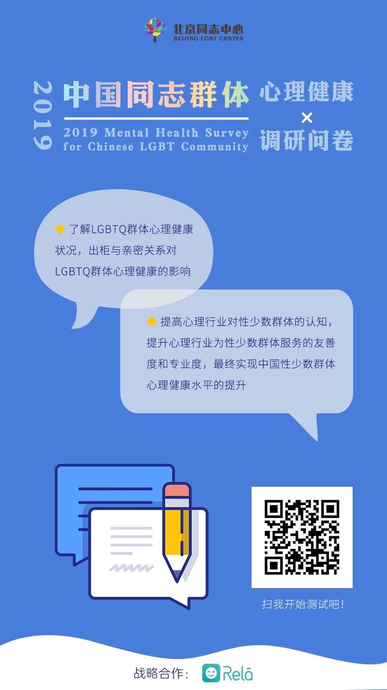
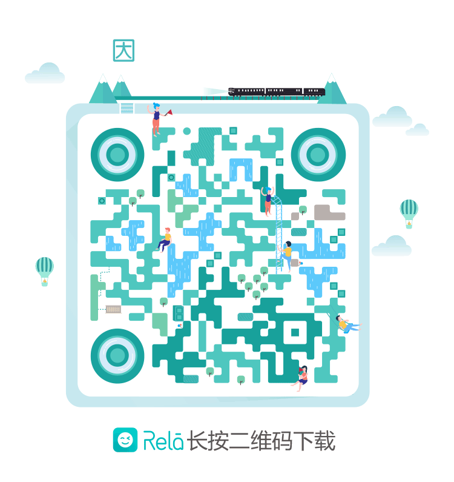

中国性少数群体心理健康调研
▲ 戳戳蓝字收获小姐姐
你是否在面临出柜的时候会感到无从开口，缺乏支持呢？
是否在和恋人的相处当中会遇到无所适从，委屈难过呢？
是否也会经历情绪的起伏，不知道如何自我调节心情呢？
你了解自己的心理状况到底如何吗？
2014年起，北京同志中心为了能够更好的服务中国的LGBTIO群体，帮助中国的心理咨询从业者更好的理解LGBTIQ群体，从而提高LGBTIQ群体的心理健康水平，开展了“中国性少数群体心理健康调研”。
根据调研显示，中国性少数群体的高抑郁风险是全国普通样本的三倍。之后的几年当中，北京同志中心不断的优化机构内部的心理健康服务，扩大在中国开展心理咨询师培训的范围。
5年过去了，中国的性少数人群心理健康状况是否有所变化？2019年，北京同志中心再次联合热拉发起《中国性少数群体心理健康调研》。
此次研究计划在全国发放，收集并分析至少20000多个样本数据，旨在通过更大范围、更多元的数据调研，为中国社会揭示性少数群体的心理健康状况以及相关的需求。
依照学术研究的伦理规范，我们会对所有的个人信息保密，包括您的各项基本情况、对具体问题的回答等等。
扫描下方海报上的二维码即可参与调研
或者点击“阅读原文”与我们一同携手，
提高中国性少数人群的心理健康水平。
↓↓↓（扫一扫）


投稿/转载：ruoling.wang@rela.me
商务合作邮箱：biz@rela.me
热拉官方微博：@热拉RelaAPP

▽ 戳蓝字填表，为LGBTIQ群体助力吧！